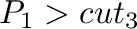

Next: model.make_region() define Up: The model class: handling Previous: model.orient() center Contents Index
This command calculates and writes out the selected type(s) of data (from the list below) about the model. If file is specified and is non-empty, each property is written out to a file using file as the root of the file name. The last such property is also assigned to the Biso field of each atom of the model (in the case of residue properties, each atom in the residue gets the value of the property). This can be accessed as Atom.biso, or written out with model.write() to a PDB file, where it appears as the temperature factor.
The data to be calculated are specified by concatenating the corresponding keywords in the output variable:
Kinking residues have both DRMS and maximal distance difference beyond
their respective cutoffs (,  ). The actual single
kink residue separating the two new segments of the same type is the
central kinking residue. Note: we are assuming that there are no multiple
kinks within one contiguous segment of residues of the same secondary
structure type.
). The actual single
kink residue separating the two new segments of the same type is the
central kinking residue. Note: we are assuming that there are no multiple
kinks within one contiguous segment of residues of the same secondary
structure type.
 is defined as
the angle (expressed in degrees, between 0 and 180) between the least-squares
lines through
Cα atoms to and to .
is defined as
the angle (expressed in degrees, between 0 and 180) between the least-squares
lines through
Cα atoms to and to .
# Example for: model.write_data() # This will calculate solvent accessibility, dihedral angles, # residue-residue neighbors, secondary structure, and local mainchain # curvature for a structure in the PDB file. from modeller import * log.verbose() # Get topology library for radii and the model without waters and HETATMs: env = environ() env.io.atom_files_directory = ['../atom_files'] env.io.hetatm = False env.io.water = False env.libs.topology.read(file='$(LIB)/top_heav.lib') mdl = model(env, file='1fas') # Calculate residue solvent accessibilities, dihedral angles, # residue neighbors, and secondary structure, and write to files: myedat = energy_data() myedat.radii_factor = 1.0 # The default is 0.82 (for soft-sphere restraints) mdl.write_data(file='1fas', edat=myedat, output='PSA DIH NGH SSM') # Calculate local mainchain curvature mdl.write_data(output='CRV') # Use the calculated curvature data (in Biso) print("The following residues have local mainchain curvature") print("greater than 90 degrees:") print([r for r in mdl.residues if r.atoms[0].biso * 10 > 90.0])